Biostatistica în sănătatea publică
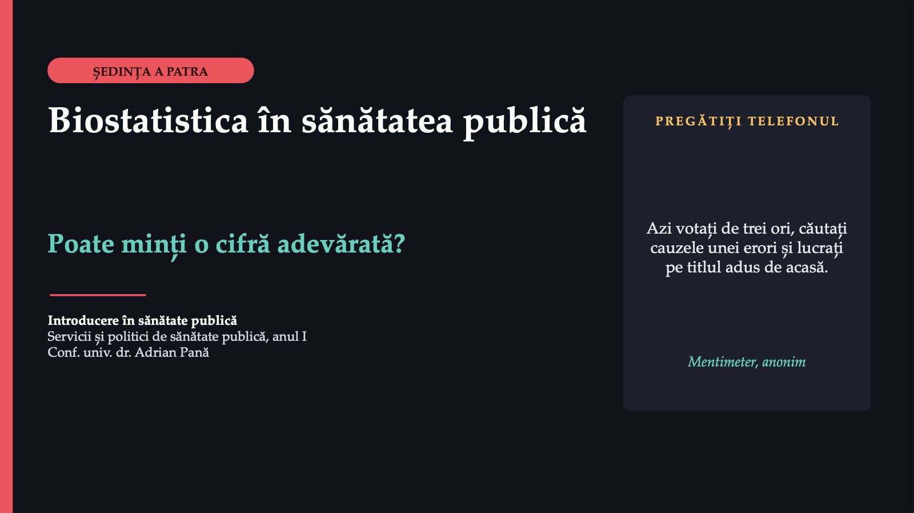
1 / 48Biostatistica sună a formule. Azi nu calculăm teste. Pornim de la o întrebare pe care v-o puneți de fiecare dată când citiți o știre: poate minți o cifră adevărată?
Da, o cifră adevărată poate minți
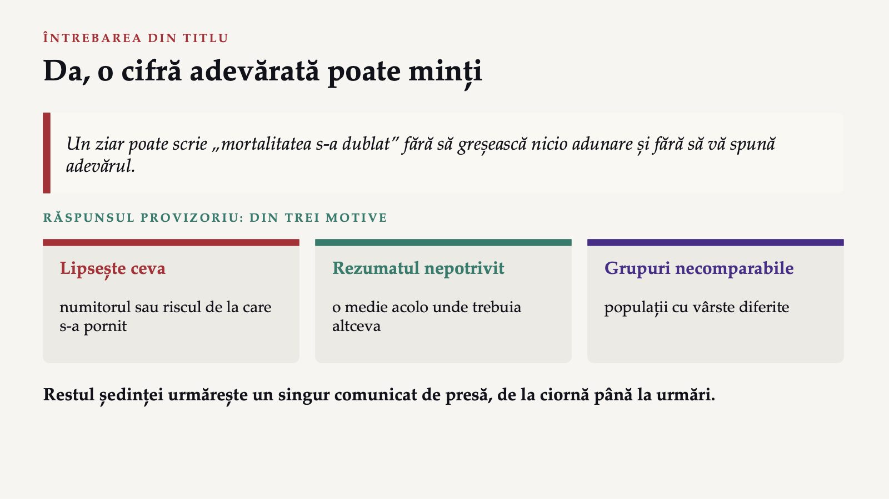
2 / 48Biostatistica este meseria care pune lângă fiecare cifră ce îi trebuie ca să nu mintă. Vom vedea cele trei motive pe rând, pe un singur comunicat.
Cinci părți, jumătate din timp lucrați voi
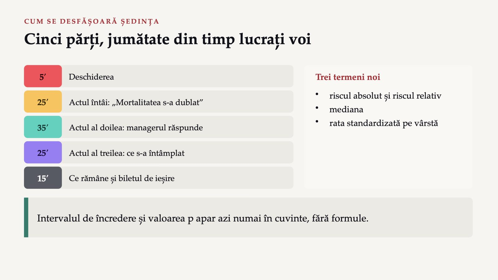
3 / 48Azi aveți trei termeni noi, fiecare spus și în cuvinte obișnuite. Intervalul de încredere și valoarea p le veți întâlni doar în cuvinte, la nivel de interpretare; definițiile exacte sunt în note, la „Pentru curioși”.
+100%
 4 / 48
4 / 48Cazul este construit pentru acest curs. Sunteți analistul. Tabloul de bord calculează singur variația procentuală față de trimestrul precedent, iar o celulă e colorată în roșu.
3
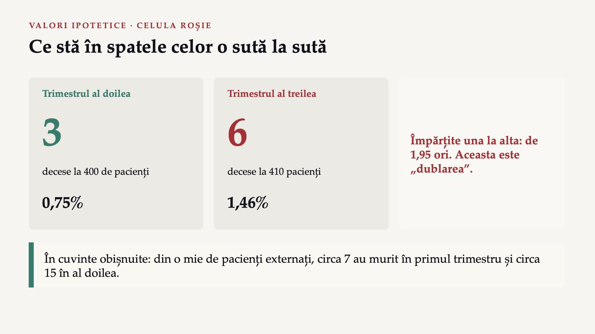
5 / 48Valorile sunt ipotetice. Proporția deceselor a crescut de la 0,75% la 1,46%. Din o mie de pacienți externați, circa 7 au murit în primul trimestru și circa 15 în al doilea.
Ultimele opt trimestre
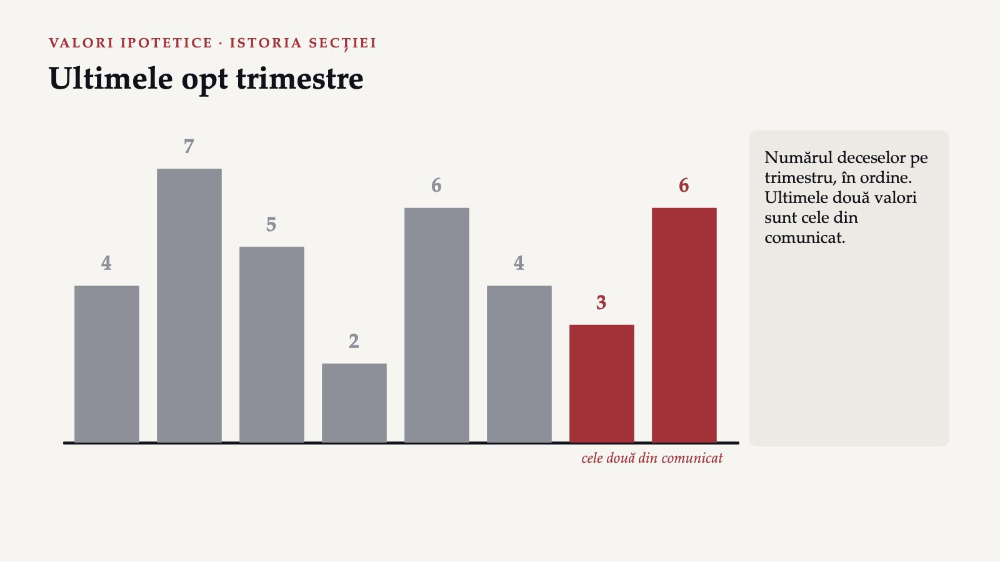
6 / 48Valorile sunt ipotetice. Acestea sunt decesele secției în ultimele opt trimestre, în ordine. Ultimele două valori sunt cele din comunicat.
Ce scrieți în comunicat despre decesele de la Spitalul A?
![MENTIMETER · ANONIM PRIMA DECIZIE · VOTAȚI PE TELEFON Ce scrieți în comunicat despre decesele de la Spitalul A? A „Mortalitatea la Spitalul A s-a dublat.” B Decesele și pacienții din ambele trimestre: „la numere atât de mici, valoarea rămâne în intervalul ultimilor doi ani” C Nu scrieți nimic, ca să nu alarmați populația D „Creștere semnificativă statistic a mortalității”, fără cifre Rezultatele rămân ascunse. Apoi, două minute cu colegul de bancă: convingeți-l pe cel care a votat altfel. Răspundeți pe telefon, la codul afișat.](diapozitive/C04/007.jpg) 7 / 48
7 / 48Votați singuri, fără să vă consultați. Nu există încă un răspuns pe ecran; îl construim împreună după al doilea vot.
Ce scrieți despre decesele de la Spitalul A? (după discuție)
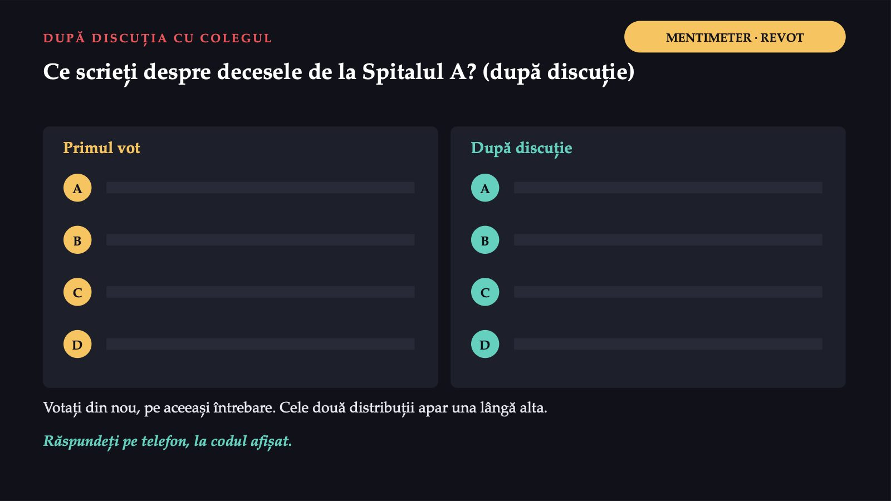
8 / 48Același vot, după ce ați vorbit cu colegul. Comparăm cele două distribuții, una lângă alta. Ca să judecăm votul, avem nevoie de câteva lucruri despre datele din celula roșie.
Felul datelor decide ce calcule au sens
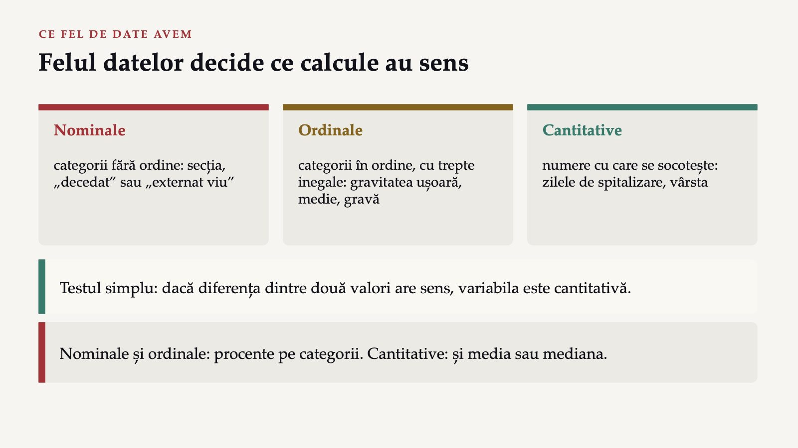
9 / 48Fiecare pacient din tabloul de bord e descris prin câteva informații: secția, dacă a murit, cât de grav era, câte zile a stat. Statistica le numește variabile. Iar felul în care e măsurată o variabilă decide ce calcule au sens cu ea.
Trei decese: multe sau puține?
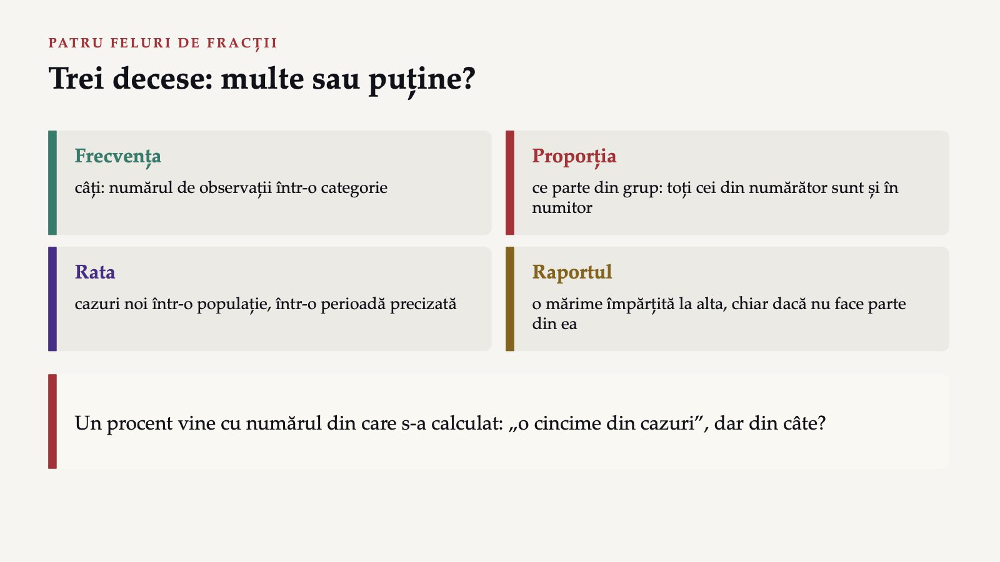
10 / 48Trei decese sunt multe la zece pacienți și puține la zece mii. De aceea sănătatea publică lucrează cu fracții. Fără perioadă, o rată nu se poate interpreta: două cazuri la o sută de oameni într-o săptămână nu înseamnă același lucru ca în douăzeci de ani.
Riscul absolut și riscul relativ
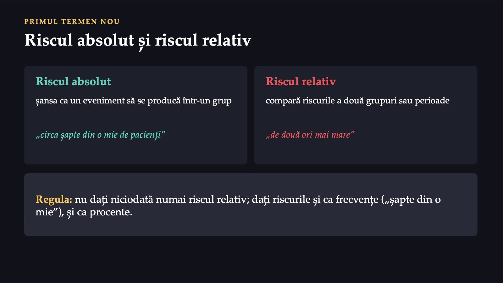
11 / 48Riscurile relative compară două riscuri și nu spun nimic despre șansa absolută a unui eveniment. De aceea, un articol despre comunicarea dovezilor către pacienți recomandă să dați riscurile atât ca frecvențe, cât și ca procente.
Două dublări care arată la fel
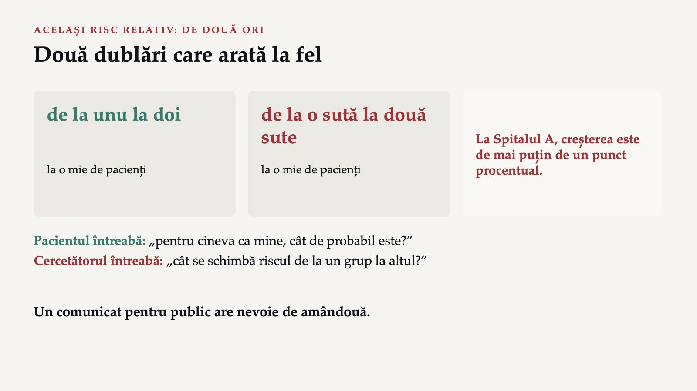
12 / 48O dublare de la un caz la o mie la două și o dublare de la o sută la două sute arată la fel ca risc relativ. Sunt situații complet diferite. Diferența absolută se exprimă în puncte procentuale.
Numerele mici se mișcă singure
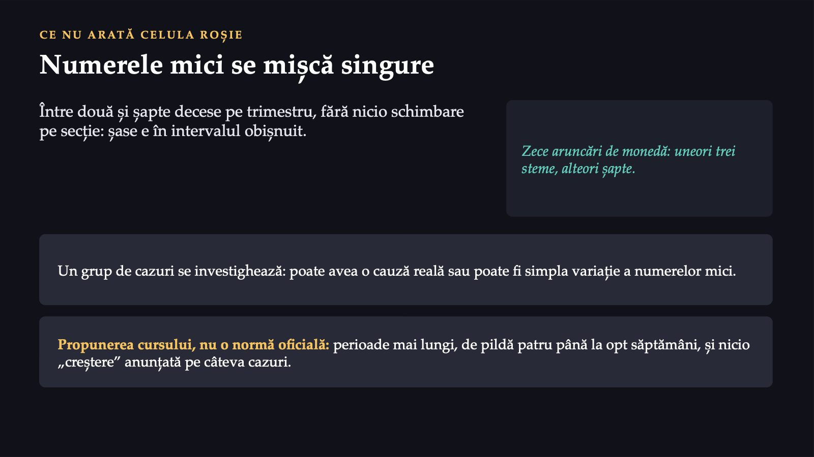
13 / 48Când numerele sunt mici, ele urcă și coboară de la un trimestru la altul doar din întâmplare. Același fenomen explică de ce o comunitate observă uneori prea multe cazuri de cancer într-un cartier.
Răspunsul apare după ședință
Răspunsul apare după ședință
Vineri dimineață: managerul răspunde
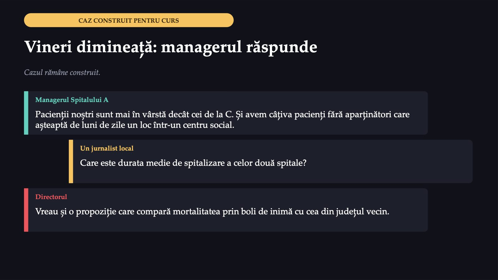
15 / 48Ciorna voastră ajunge la managerul Spitalului A înainte de publicare. În câteva minute aveți trei mesaje, și fiecare ascunde o capcană diferită.
Zilele de spitalizare, în ordine
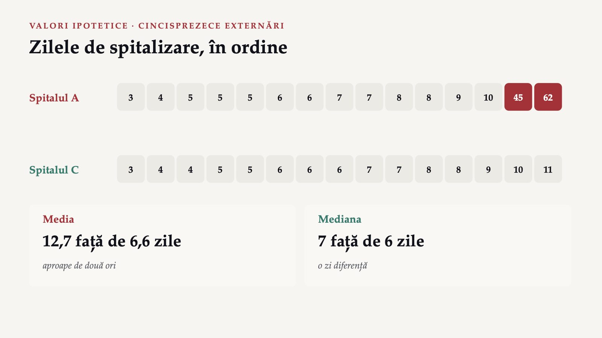
16 / 48Valorile sunt ipotetice. Uitați-vă la ultimele două valori ale Spitalului A: sunt cei doi pacienți care așteaptă un loc în centrul social.
Ce indicator puneți în tabelul public pentru durata spitalizării?
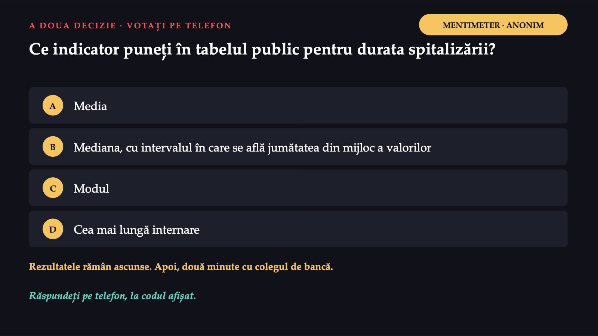
17 / 48Votați singuri. Gândiți-vă la cine citește tabelul: un pacient care vrea să știe cât va sta în spital.
Ce indicator puneți în tabelul public? (după discuție)
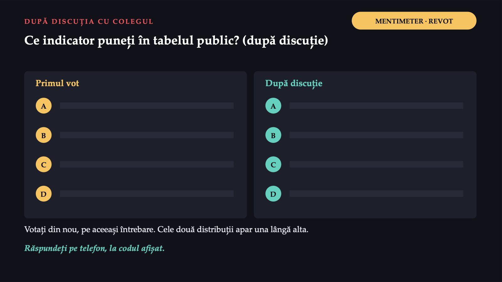
18 / 48Același vot, după discuție. Comparăm cele două distribuții. Pentru a-l judeca, avem nevoie de al doilea termen nou.
Mediana: valoarea din mijloc
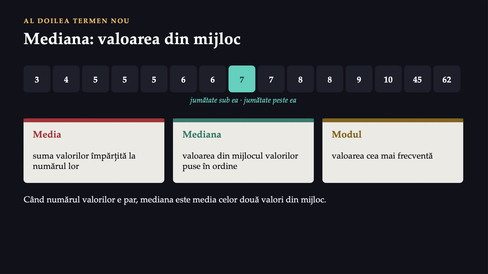
19 / 48Pentru a rezuma unde se află centrul unor valori, statistica descriptivă are trei măsuri. Mediana împarte valorile ordonate în două jumătăți egale.
Valorile extreme trag media spre ele
 20 / 48
20 / 48Multe măsurători biologice, ca înălțimea, se apropie de distribuția în formă de clopot. Durata spitalizării nu: are puține valori foarte mari. Acolo, mediana descrie mai bine cazul obișnuit.
Jumătatea din mijloc: între 5 și 9 zile
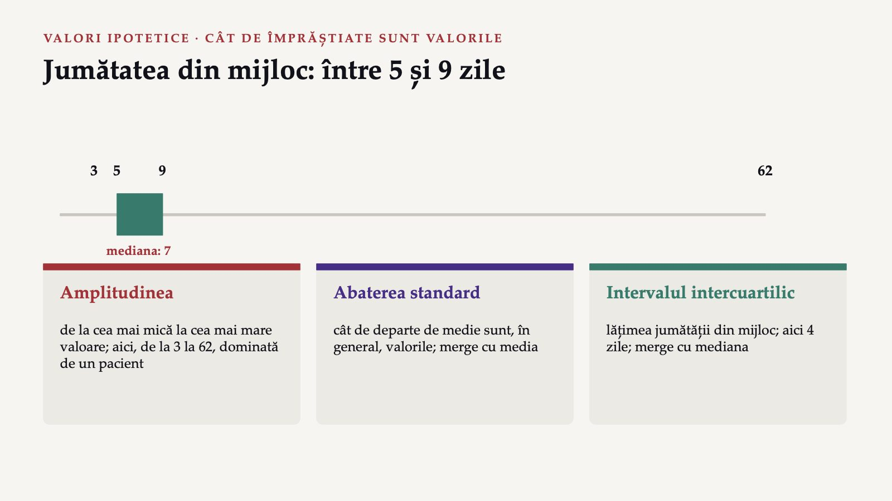
21 / 48Valorile sunt ipotetice. Regula se aplică oricărui tabel: la valori aproximativ simetrice și numeroase, media cu abaterea standard; la valori asimetrice sau puține, mediana cu intervalul intercuartilic.
Răspunsul apare după ședință
Răspunsul apare după ședință
Rata standardizată pe vârstă
![AL TREILEA TERMEN NOU Rata standardizată pe vârstă Bolile circulatorii omoară mai ales vârstnici. Un județ îmbătrânit are mai multe decese la 100 000 de locuitori, chiar dacă la fiecare vârstă riscul e același. În cuvinte obișnuite: cum ar arăta comparația dacă cele două populații ar avea aceeași vârstă? Eurostat folosește populația standard europeană. Rata brută pentru planificarea serviciilor: câți oameni vor avea nevoie de ele Rata standardizată pentru comparații între județe, țări sau în timp](diapozitive/C04/023.jpg) 23 / 48
23 / 48Rata standardizată este rata pe care ar avea-o o populație dacă ar avea structura pe vârstă a unei populații de referință. Rata brută rămâne utilă, pentru că arată câți oameni vor avea efectiv nevoie de servicii.
România are o populație ceva mai tânără decât media Uniunii Europene. Trecem de la ratele brute la cele standardizate pe vârstă. Diferența de mortalitate prin boli ale aparatului circulator:
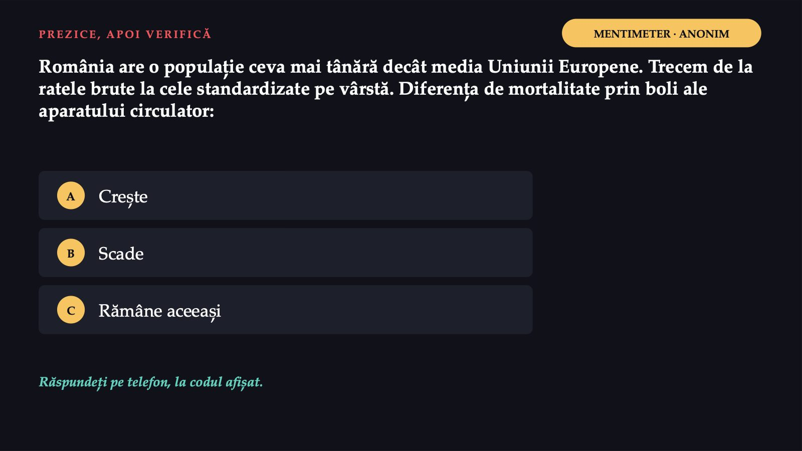
24 / 48Faceți o predicție înainte de a vedea cifrele reale. Gândiți-vă la ce ați aflat despre vârstă.
Răspunsul apare după ședință
Răspunsul apare după ședință
O conferință de morbiditate și mortalitate pe o eroare de date
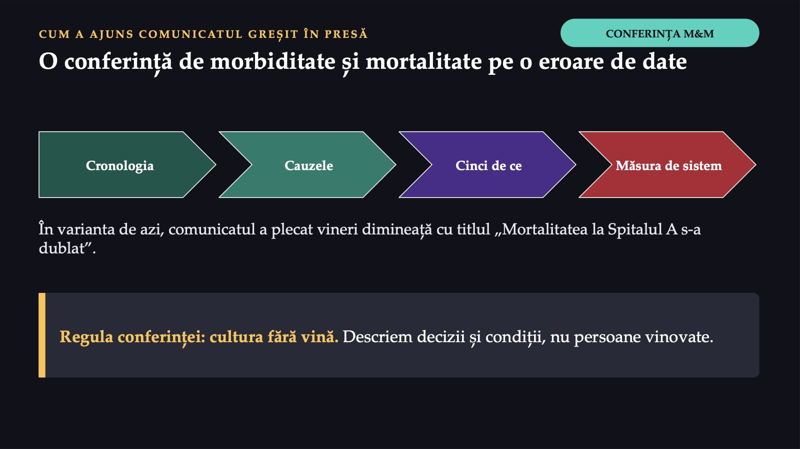
26 / 48Spitalele analizează decesele și complicațiile evitabile în conferințe de morbiditate și mortalitate. Aceeași metodă se poate aplica unei erori de date. Regula conferinței este cultura fără vină.
De joi la luni
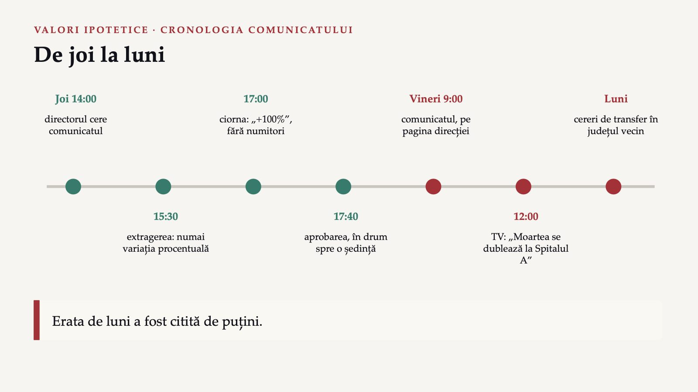
27 / 48Valorile sunt ipotetice. Urmăriți cronologia fără să căutați un vinovat: la fiecare oră, cine a văzut ce și ce a decis.
De ce a plecat comunicatul greșit?
28 / 48Un cuvânt sau o expresie. Respectăm regula conferinței: căutăm condiții și decizii, nu persoane.
Oamenii
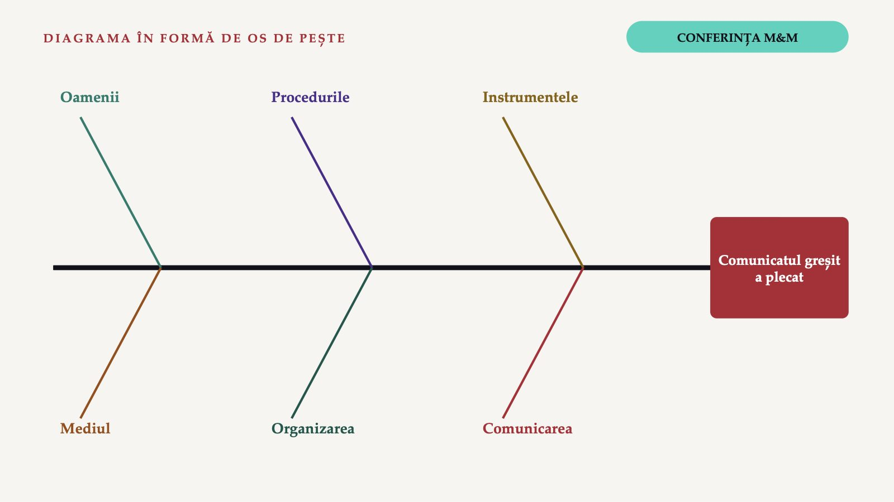
29 / 48Șase ramuri: oamenii, procedurile, instrumentele, mediul, organizarea și comunicarea. Fiecare cauză din nor își găsește o ramură.
Răspunsul apare după ședință
Răspunsul apare după ședință
Pornim de la cauza aleasă de sală și întrebăm de cinci ori „de ce?”
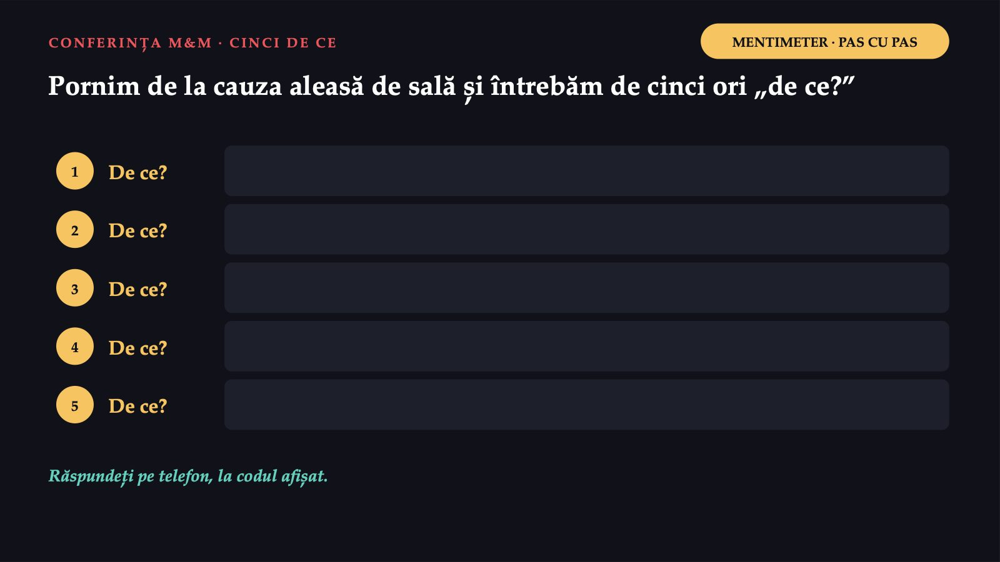
31 / 48Lanțul coboară, de obicei, de la o eroare individuală la o lipsă de sistem. Votăm fiecare pas.
Răspunsul apare după ședință
Răspunsul apare după ședință
Fișa de verificare de o pagină
![MĂSURA DE SISTEM, NU „MAI MULTĂ ATENȚIE” Fișa de verificare de o pagină Numărul absolut și numitorul lângă orice procent Riscul relativ numai împreună cu cel absolut Comparația cu o perioadă lungă Regula numerelor mici: se agregă, fără variații procentuale Rate standardizate între teritorii A doua citire de către un coleg Cum știm că funcționează? Proporția comunicatelor care trec fișa la auditul lunar și numărul eratelor pe trimestru. Tabloul de bord se modifică: afișează numitorii lângă procente.](diapozitive/C04/033.jpg) 33 / 48
33 / 48Măsura de sistem nu este mai multă atenție. Este o fișă de verificare, obligatorie înainte de orice comunicat cu cifre, și un indicator care arată dacă fișa funcționează.
Răspunsul apare după ședință
Răspunsul apare după ședință
Răspunsul apare după ședință
Răspunsul apare după ședință
1
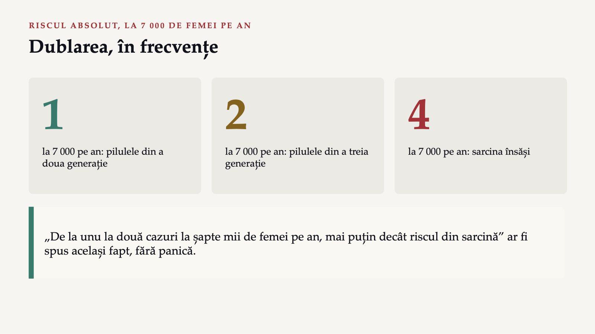
36 / 48Riscul absolut din spatele acelei dublări era mic. Lecția este cea din actul întâi: riscul relativ singur nu spune nimic despre șansa absolută.
Eșantionul și marja lui
 37 / 48
37 / 48Un eșantion diferit ar fi dat un rezultat puțin diferit. Statistica arată această incertitudine printr-un interval de încredere. Definiția exactă stă în note, la „Pentru curioși”.
Aceeași estimare, două marje
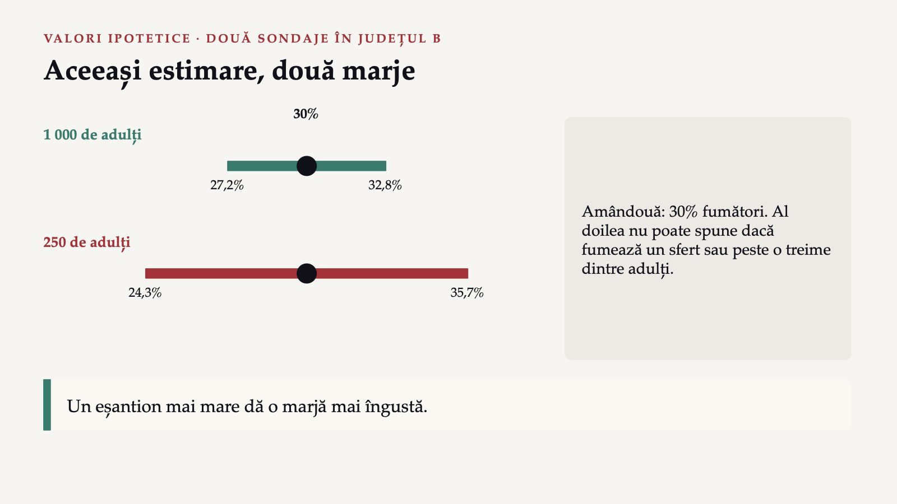
38 / 48Valorile sunt ipotetice. Același rezultat, treizeci la sută, dar al doilea sondaj, mai ieftin, are o marjă mult mai largă.
Cât de neobișnuit ar fi rezultatul?
 39 / 48
39 / 48O creștere de jumătate de procent a consultațiilor pentru gripă într-o țară întreagă poate fi semnificativă și să nu schimbe nimic în spitale.
Eroarea sistematică
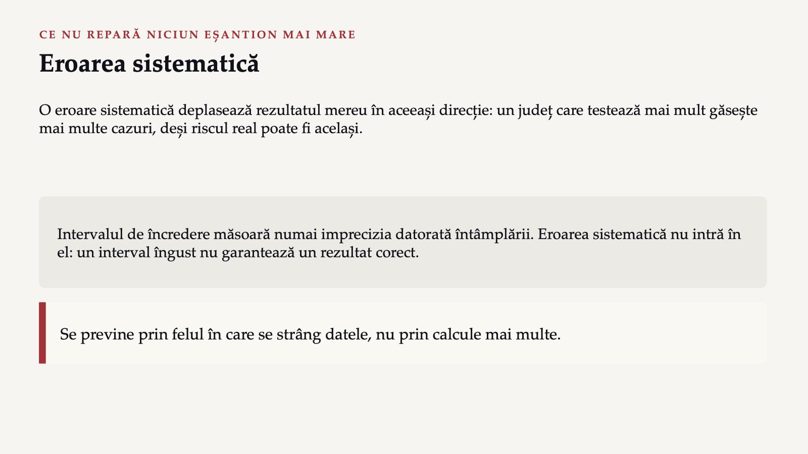
40 / 48În engleză se numește bias. Erorile sistematice se previn prin felul în care se strâng datele, nu prin calcule mai multe.
Corelația: 0,6
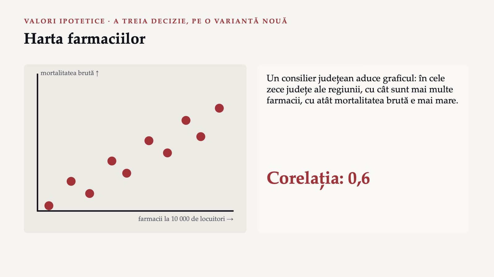
41 / 48Valorile sunt ipotetice. Fiecare punct este un județ. Un consilier județean vă cere o reacție.
Ce răspundeți consilierului?
 42 / 48
42 / 48Un singur vot de data aceasta. Gândiți-vă la ce ați aflat în actul al doilea despre vârstă.
Înghețata, înecurile și vara
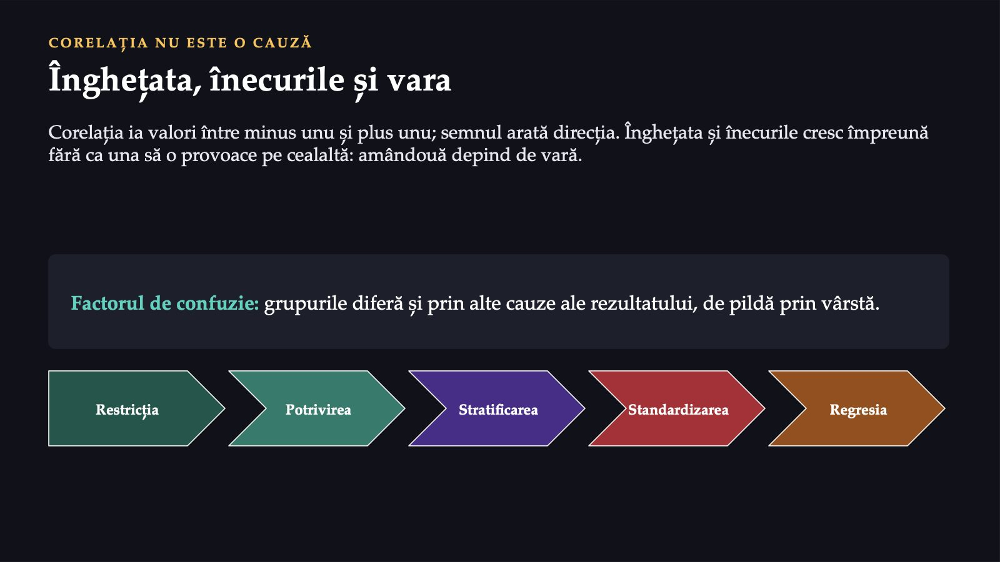
43 / 48Standardizarea pe vârstă, pe care ați văzut-o în actul al doilea, este una dintre armele împotriva confuziei.
Județe, nu oameni: eroarea ecologică
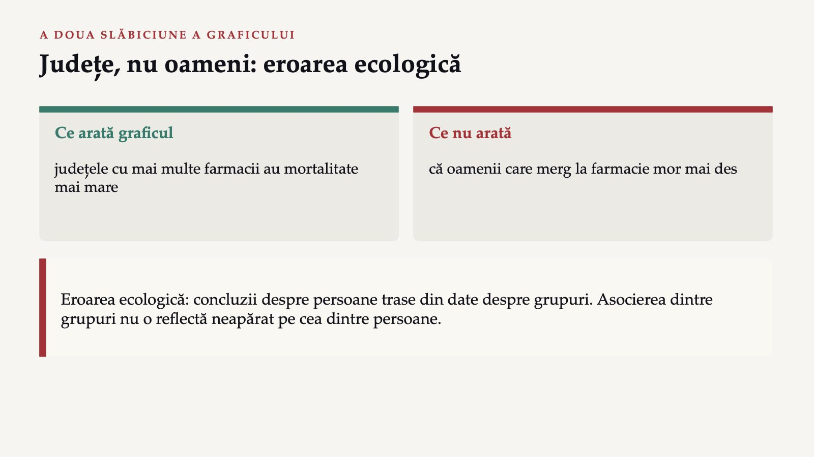
44 / 48Graficul consilierului compară județe. Din el nu putem spune nimic despre persoanele care merg la farmacie.
Răspunsul apare după ședință
Răspunsul apare după ședință
Trei feluri în care minte o cifră, pe un singur comunicat
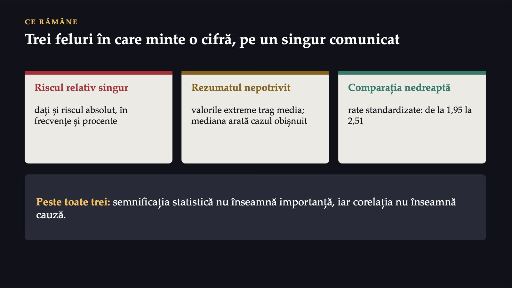
46 / 48Comunicatul de vineri a strâns toate cele trei capcane într-o singură pagină. Le puteți recunoaște de acum în orice știre.
Titlul adus de acasă: trei întrebări
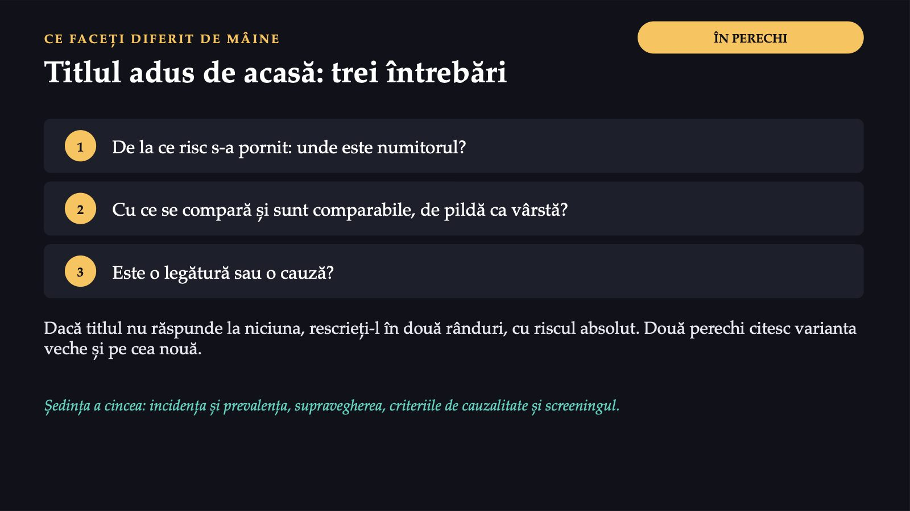
47 / 48Este exercițiul pe care l-ar face un analist bun înainte de orice comunicat. Data viitoare trecem de la citirea cifrelor la folosirea lor pentru a urmări bolile.
Trei întrebări pentru final
 48 / 48
48 / 48Trei întrebări, anonim, pe Mentimeter. Fără răspunsurile voastre nu pot ști ce să schimb.
Săgeți sau spațiu: navigare · O: vedere de ansamblu · N: notele prezentatorului · F: ecran complet · Esc: închidere